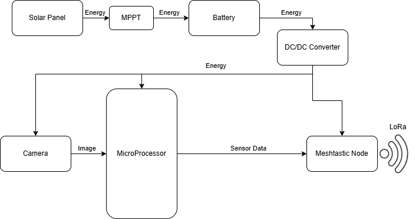
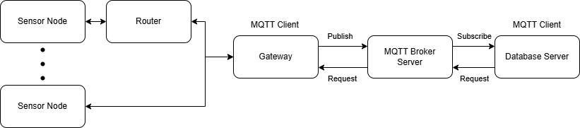

Statement of Purpose
This report is designed to explain the development process of the people counting sensor and the network structure to deliver the information of the number of tourists in various locations throughout Madeira Island.
Research Questions
The study examines two major research questions:
- How to develop a sensor node to count people crossing a boundary?
- How to relay the counting information from each sensor node to the database server?
Hardware Restrictions
Because of the nature of this project, a camera sensor is utilized, for its versatility and adaptability, alongside an AI detection and tracking model, at the edge, to count the number of people entering and exiting each location while retaining anonymity. For the sensor node to be placed in any location, without spatial restrictions, it necessitates a fully enclosed autonomous system with power generation, power storage and telecommunications capabilities.
Sensor Node
Considering the hardware restrictions, the sensor node is composed from the following materials:
- Solar panel + MPPT charger, state of the art consensus for power generation at the sensor node;
- Battery + DC/DC converter, power storage most appropriate with solar panel;
- Camera sensor, versatile sensor that doesn't restrict the space for the node to implement people counting;
- Microprocessor board, to run all the processing and AI needed for the program;
- Meshtastic node, for a simpler configuration of the MAC layer to provide multiple access of the sensor nodes to the gateway, alongside the PHY layer of LoRa for long range communication.

People Counting Algorithm
To count the number of people crossing a boundary, two regions are defined in the image: an inner zone and an outer zone. The program goes through each person's track and compares the current position with the previous position. If the current position is in the inner zone and the previous position is in the outer zone, it means that person entered the area of interest, so it increments the counter of people. If the current position is in the outer zone and the previous position is in the inner zone, it means that person exited the area of interest, so it decrements the counter.
Network Architecture
As the name implies, Meshtastic uses a mesh architecture to communicate between each node. It has 3 main node types: sensor nodes, routers, gateways. The sensor nodes, normally, wake up randomly, sample the data, transmit the information and then go back to sleep. The routers are continuously listening for packets and retransmitting them when able to do so. The gateways are base nodes that are connected to the Internet via WiFi and transmit the data with the MQTT protocol to a MQTT Broker server.
To transmit a message from a sensor node to the database server, firstly, the sensor node transmits a LoRa packet, that may or may not need to use a router for coverage, to the gateway node. The gateway node translates the received LoRa packet into a WiFi packet with the MQTT protocol, publishing the sensor data to the MQTT Broker server. The database server subscribes to the message channel of the MQTT Broker server, to read the sensor data, and then adds the information to the database.
